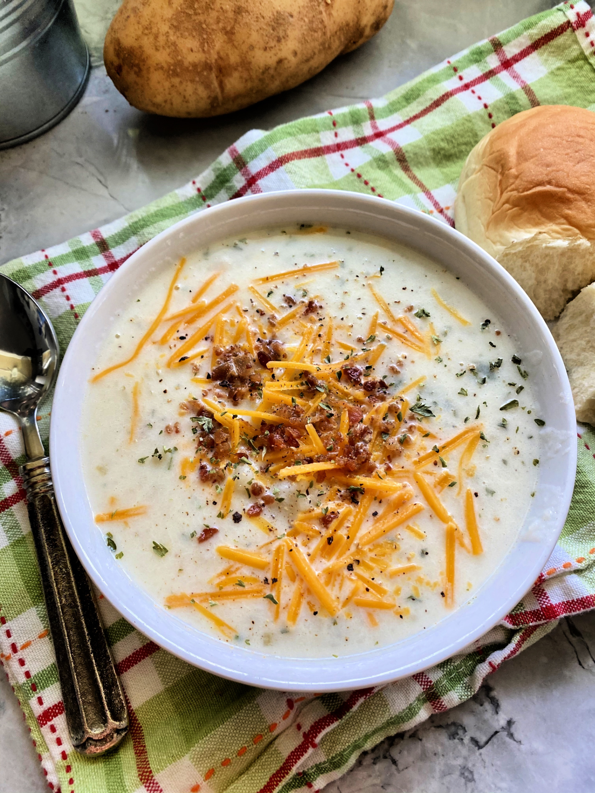

Smashed Potato Soup

Description
Mashed Potato Soup is a great way to use up leftover mashed potatoes. This quick cooking soup comes together in 30 minutes with just 6 ingredients. Even better, your family will never know they are eating the leftover mashed potatoes!
Ingredients
- 3 ½ pounds potatoes, peeled and cut into 3/4-inch cubes
- ½ cup chopped yellow or red sweet pepper
- 1 ½ teaspoons bottled roasted garlic
- ½ teaspoon ground black pepper
- 4 ½ cups chicken broth
- ½ cup whipping cream. half-and-half or light cream
- 1 cup shredded Cheddar cheese
- ½ cup thinly sliced green onions
- 1 tablespoon Chopped green onions, for garnish
- 1 Reynolds® Slow Cooker Liner
Steps
- Line a 5- to 6-quart slow cooker with a Reynolds® Slow Cooker Liner. Open slow cooker liner and place it inside a slow cooker bowl. Fit liner snugly against the bottom and sides of bowl; pull top of liner over rim of bowl.
- Combine potatoes, sweet pepper, garlic and black pepper in the slow cooker. Pour broth over all.
- Cover and cook on low-heat setting for 8 to 10 hours or on high-heat setting for 4 to 5 hours.
- Carefully remove lid to allow steam to escape. Mash potatoes slightly with a potato masher. Stir in whipping cream, Cheddar cheese and 1/2 cup thinly sliced green onions. If desired, top individual servings with additional sliced green onions.
- Do not lift or transport liner with food inside. Cool slow cooker completely, spoon out excess liquid, remove liner and toss.